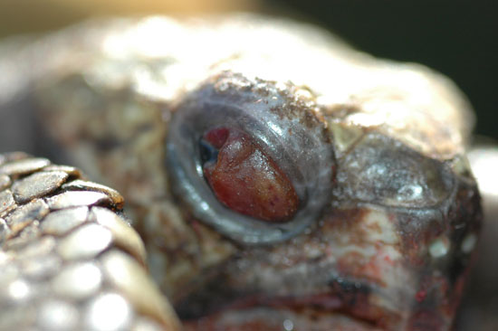
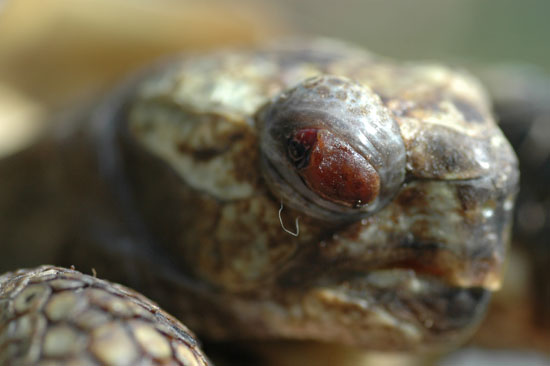
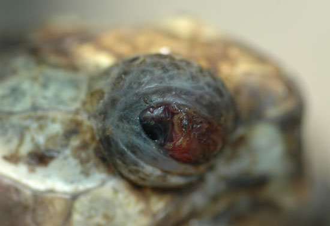
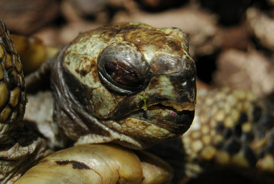
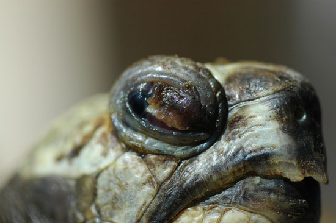
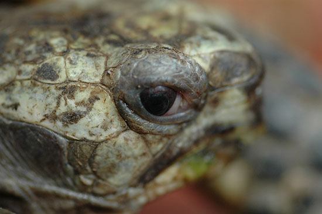

|
EVOLUCIÓN EN
INFLAMACIÓN DE
PÁRPADO DE Testudo
graeca
Pilar Almodóvar, 2007
31 de Mayo, la tortuga amanece con la
inflamación en el parpado, se le administra tobradex; primero en gotas
y luego en
ungüento oftálmico.

2 de junio empieza a verse el ojo, pero
la inflamación persiste. El mismo tratamiento.

4 de junio el tema no avanza y decidimos
cambiar de tratamiento. Antibiótico inyectado y terramicina en
ungüento oftálmico.

11 de junio, parece que la inflamación
empieza a remitir algo, pero la costra sigue. La tortuga sigue comiendo
perfectamente y continúa aislada del resto.

14 de Junio, la costra empieza a
despegarse, seguimos con el mismo tratamiento.

28 de Junio, se cae la costra y ya se ve
el ojo casi normal, no hay daños en la cornea, aún tardara una semana
en estar bien del todo.

Un mes de proceso con dos tratamientos,
a día de hoy el animal esta perfecto y sin secuelas.
|